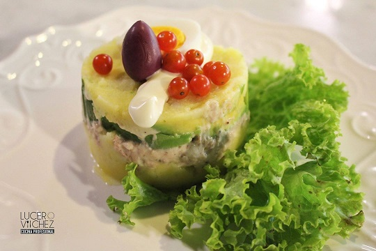

Platillo
Causaki de Atún

El causaki de atún es un plato típico de la costa peruana, que consiste en una masa de papa amarilla rellena de atún, mayonesa, palta, zanahoria, huevo y aceitunas.
Ingredientes:
Para la causa
- 200 gr de papa nevada
- 2 cds de aceite vegetal
- jugo de 1 limón
- 1 cda de pasta de ají amarillo
- Sal y pimienta
Para el relleno
- 1 lata de atún
- Mayonesa
- Zumo de limón
- Aguacate
- Queso crema
Para ensamblar
- Masa de causa
- Relleno
- Aguacate
- Aceitunas moradas
- Huevo duro
- Mayonesa o salsa tártara
Preparación:
- Para hacer la causa, cocinar las papas y procesarlas como para puré. Agregar aceite, limón y pasta de ají amarillo. Sazonar con sal y pimienta. Reservar en frío.
- Para el relleno, mezclar el atún con mayonesa, zumo de limón, sal y pimienta
- Porcionar el aguacate en julianas
- Llenar una manga con queso crema
- Cocinar huevos y rebanarlos
- Despepitar aceitunas moradas
- Para armar La Causaki: poner la mezcla de papa sobre una esterilla de bambú y extenderla con la palma dela mano hasta formar un rectángulo de ½ cm de espesor.
- Colocar encima el relleno de atún con mayonesa, enseguida extender una capa de queso crema y por último, el aguacate en tajadas para cubrir toda la causa
- Enrollar la esterilla presionando para formar un rollo. Cortar en 8 partes y decorar con mayonesa o salsa tártara
- Servir decorando con huevo, aceituna y salsa al gusto.
Más información aquí